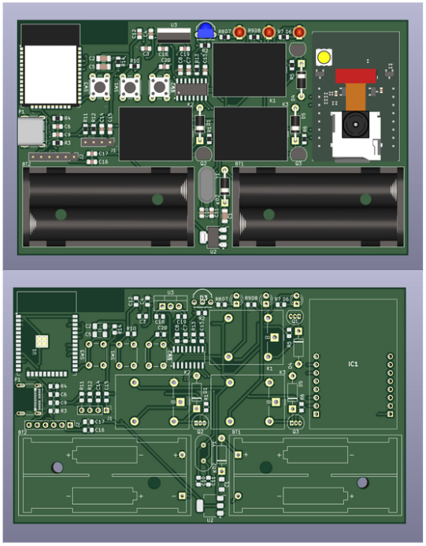
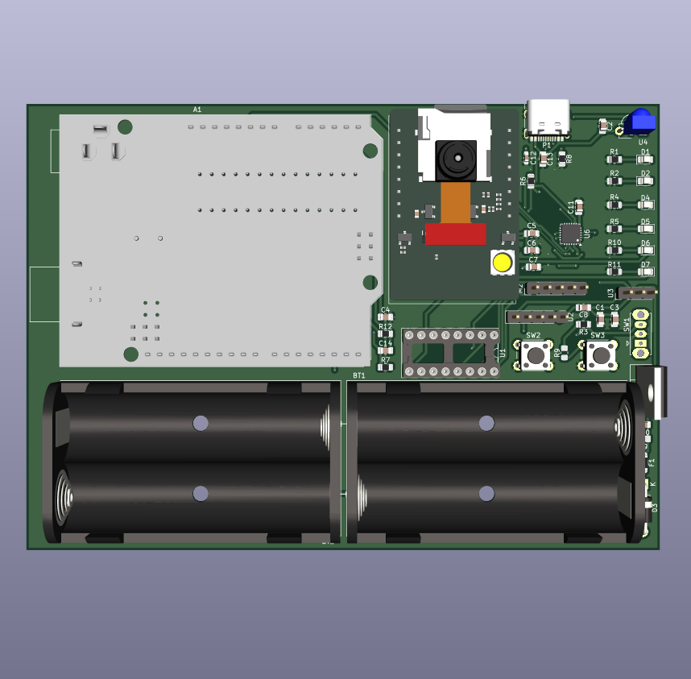
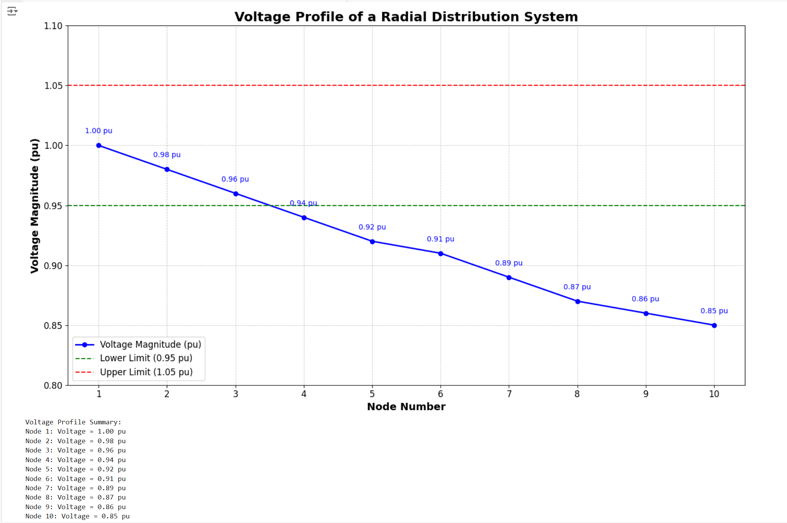
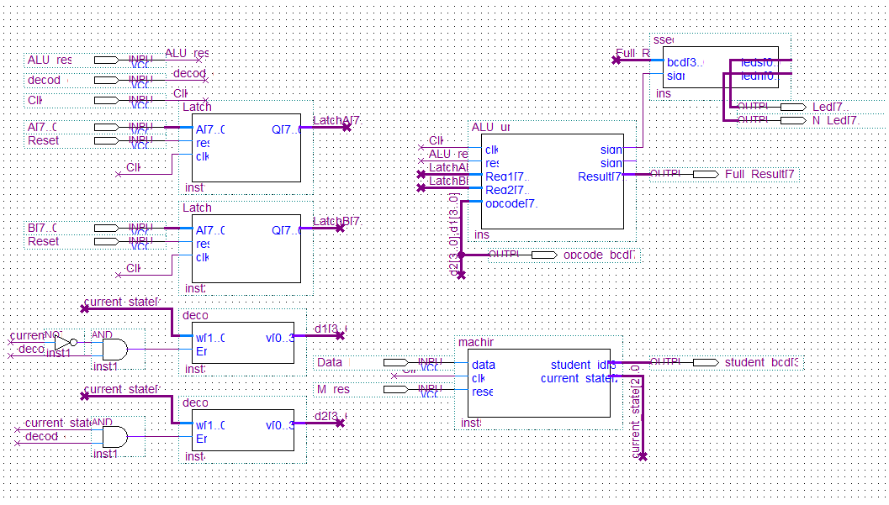
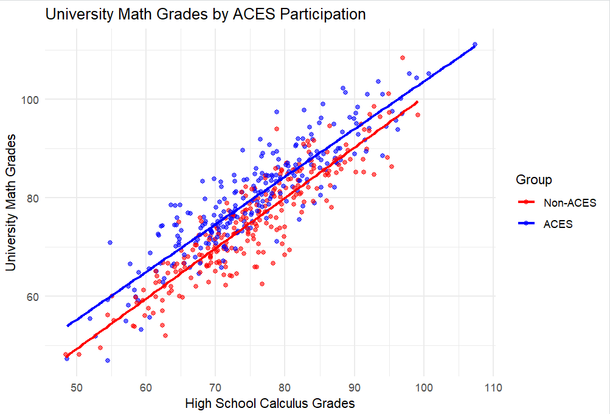
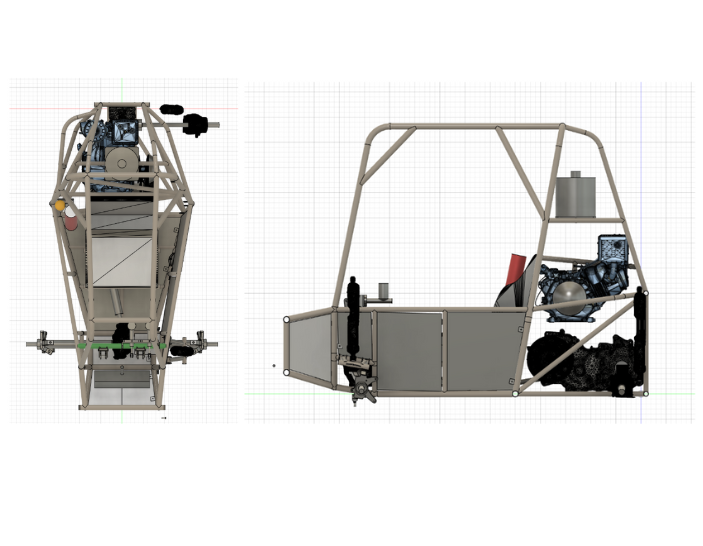

👋 Hi, I’m Andrew
Electrical Engineering Student @ Toronto Metropolitan University 🏫
Currently a Systems Integration Engineering Intern @ General Dynamics 🏢
Prev. Hardware Eng. @ Cence Power | Energy Mgmt. Intern @ City of Brampton
🧠 About me
Systems Integration Intern at General Dynamics with prior experience as an Energy Management Intern at the City of Brampton and a Hardware Engineer Intern at Cence Power. My background also includes hands-on technical work as a Computer Repair Technician at Imported Brands of Canada.
Currently leading the TMU Baja Racing Team as Project Manager. Previously served as Vice-President of Finance for TMU’s Electrical & Computer Engineering Course Union.
Passionate about embedded systems, energy infrastructure, and hardware development. Studying Electrical Engineering at Toronto Metropolitan University with a Minor in Mathematics and Computer Science.
📑 Experience
Systems Integration Intern | @ General Dynamics 🛰️
May 2025 – Present
- Built automation pipelines using PowerShell, Bash, and Python to streamline NATO service validation, reducing manual test time by 40%.
- Provisioned Windows Server and Ubuntu nodes for Active Directory, PKI, SharePoint, and secure file services via hardened CLI scripts.
- Created build guides, network configs, and deployment playbooks aligned with JITC and NATO STANAG protocols using Confluence and JIRA.
- Performed integration tests on routers, switches, and endpoints using Wireshark, DHCP validators, TLS inspection tools, and CLI-based logs.
- Collaborated cross-functionally with cybersecurity and systems teams to meet military compliance deadlines under strict configuration control.
Energy Mgmt. Engineering Intern | @ City of Brampton 🏙️
Sep 2024 – Apr 2025
- Audited 20+ facilities for LED retrofits, EV charger deployments, and Building Automation System upgrades, enhancing energy efficiency city-wide.
- Created dynamic Excel dashboards using VBA and pivot tables to analyze utility data from Alectra, ChargePoint, and Flo APIs.
- Generated heat maps and trend analyses of HVAC and water usage to identify system inefficiencies and drive a 15% energy reduction goal.
- Produced technical reports and slide decks for stakeholders, supporting project approvals and alignment with provincial energy goals.
- Assisted in grant proposals for federal clean energy programs, helping secure funding for future infrastructure retrofits.
Hardware Engineering Intern | @ Cence Power 💡
May 2024 – Aug 2024
- Designed and tested high-voltage DC power circuits and custom PCBs using Altium and KiCAD with proper EMI and spacing constraints.
- Programmed ESP32 microcontrollers in C for smart monitoring systems, integrating I2C/SPI communication with wireless sensors.
- Used oscilloscopes, signal generators, and logic analyzers for prototype validation, focusing on signal integrity and power stability.
- Built and maintained an automated inventory tracker using supplier APIs (DigiKey, Mouser), reducing procurement delays and stockouts.
- Created test jigs for accelerated hardware validation under thermal and power load conditions in lab simulations.
Computer Repair Technician | @ Imported Brands of Canada 💻
Jul 2022 – Sep 2023
- Diagnosed and repaired 150+ systems at the hardware level (RAM, SSD, GPU, motherboard, PSU) across Windows, macOS, and Linux platforms.
- Performed OS reinstallation, boot sector recovery, and partition optimization to restore performance and data reliability.
- Standardized diagnostic flows, reducing average repair time by 20% while increasing first-time-fix rates for common issues.
- Provided bilingual technical support (English/Spanish) and documented repair logs for recurring issues and warranty tracking.
- Refurbished systems for resale with full QA workflows including BIOS flashing, driver reinstallation, and device cleanup.
🛠️ Projects

Smart Power Management System
- Developed an ESP32-based energy automation system that uses IR sensors and iris recognition for personalized room control.
- Programmed using ESP-IDF in C with I2C/SPI integration, real-time interrupts, and power-saving deep sleep modes.
- Designed a compact dual-layer PCB in KiCAD featuring SMD/through-hole parts, LDO regulators, and modular headers for sensors.
- Integrated IR-based motion detection with secure iris recognition for appliance automation and energy optimization.
- Validated firmware using serial debugging and logic analyzers to ensure stable sensor communication and minimal latency.

Face & Voice Recognition AutoDoor
- Created a dual-authentication access control system using ESP32-CAM for facial recognition and a voice command module.
- Programmed embedded C firmware with state-machine architecture to manage door motor sequencing and voice detection events.
- Designed and fabricated a 4-layer PCB using KiCAD 7, integrating voltage regulation, signal routing, and modular I/O expansion.
- Controlled a unipolar stepper motor via ULN2003 driver and optimized movement through current-limiting and PWM techniques.
- Tested and debugged motor-sensor integration using serial monitors, ensuring reliable command execution and safe operation.

Ladder Iterative Load Flow Analysis in Python
- Built a Python application to simulate radial power distribution systems using the Ladder Iterative Load Flow algorithm.
- Processed IEEE-format Excel inputs with pandas, calculated voltage/power flow using numpy, and generated outputs with openpyxl.
- Designed a tkinter GUI for file upload, execution, and result display, improving accessibility for academic and field use.
- Implemented error-checking and input validation to detect data issues before algorithm execution.
- Published codebase to GitHub with version control, modular architecture, and future support for cloud-based load flow extensions.

FPGA-Based General-Purpose Processor
- Designed an 8-bit general-purpose processor using VHDL and Quartus II on an Altera FPGA board.
- Implemented FSM-based control unit, ALU (ADD, AND, OR, XOR), registers, and opcode decoder for instruction handling.
- Used 7-segment display to show signed 8-bit ALU outputs with custom sign-handling logic and clock synchronization.
- Simulated timing and logic behavior using the Waveform Editor to optimize propagation delays and FSM transitions.
- Employed modular VHDL architecture and Boolean optimization for resource-efficient implementation.

Academic Intervention Impact Analysis (R & SQL)
- Analyzed effectiveness of TMU's ACES academic support program using Propensity Score Analysis in R.
- Connected and queried student demographic/outcome data via SQL; cleaned/preprocessed data in R with dplyr and tidyr.
- Estimated causal effects using logistic regression and random forests, validated covariate balance with Love plots and SMDs.
- Built interactive Power BI dashboards showing performance trends, regional analysis, and treatment impact.
- Compiled technical findings into LaTeX reports for stakeholders with statistical visuals and actionable recommendations.

TMU Baja Racing – Chassis Design & Manufacturing
- Led design, simulation, and fabrication of a high-strength, lightweight chassis for TMU's Baja SAE off-road vehicle.
- Used SolidWorks to model the chassis and performed FEA simulations to analyze crash loads, torsional rigidity, and safety margins.
- Managed welding operations and ensured manufacturing accuracy using Fusion 360 for angle validation and assembly planning.
- Supervised integration of mechanical and electrical subsystems with ergonomic adjustments for driver safety and ease of maintenance.
- Prepared detailed technical drawings and sourcing documentation for manufacturing and supplier coordination.
📚 Skills in the Field
Programming Languages
- C/C++
- Python
- VHDL
- MATLAB
- JavaScript
- Java
- Microsoft VBA
- Linux Bash
Engineering Tools
- Altium Designer
- KiCAD
- SPICE
- Quartus
- MultiSim
- PX4
- Arduino
- ESP32
- STM32
- PuTTY
Hardware
- PCB Design
- Sensor Integration
- Microcontroller Programming
- Digital Multimeters
- Oscilloscopes
- Soldering
CAD Software
- SolidWorks (CSWA, CSWA-AM, CSWA-SD, CSWP)
- Fusion 360
- AutoCAD
- AutoCAD Electrical
- OnShape
Workspace Tools
- Microsoft Excel
- Microsoft Word
- Microsoft PowerPoint
- Microsoft SharePoint
- Microsoft Outlook
- Google Docs
- Google Sheets
- Google Slides
- Google Drive
- Slack
- Microsoft Teams
📘 Coursework
- COE 538 – Microprocessor Systems
- ELE 635 – Communications Systems
- ELE 531 – Electromagnetics
- ELE 637 – Energy Conversion
- ELE 532 – Signals and Systems I
- ELE 504 – Electronic Circuits II
- ELE 404 – Electronic Circuits I
- COE 428 – Algorithms and Data Structures
- COE 328 – Digital Systems
- ELE 639 – Control Systems